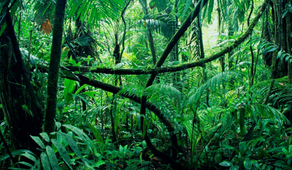
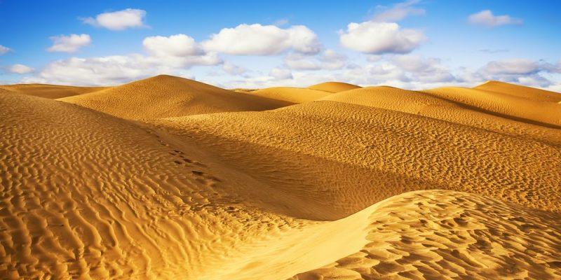

CONTENIDO
Bosques

Bosques del mundo
Un bosque es un ecosistema con una importante
población de árboles y arbustos. Los bosques
absorben dióxido de carbono, conservan muchas
propiedades en el suelo (el cual es muy fértil)
y regula flujos hidrológicos.
Información relevante sobre los bosques
| TIPOS | TEMPERATURA | ESPECIES QUE LO HABITAN |
|---|---|---|
| Boreal | 19°C | Caribu, Oso pardo, Lince Boreal. |
| Templado | 10°C en Promedio | Caracal, Perro mapache, Zorro andino |
| Subtropical | 18°C en Promedio | Zarigüeyas, Murciélagos, Tucanes |
| Tropical | 27°C en Promedio | Araña mona, Halcones, Buitres |
Información con ayuda de Concepto de BOSQUE
Regresar al Contenido
Selvas
Selvas del mundo
El bioma de la selva es conocido por muchos nombres diferentes; bosque lluvioso,
jungla, bosques densos, entre otros términos. Principalmente alberga una extensa
cantidad de especies en flora y fauna además de caracterizarse por albergar árboles
de grandes dimensiones y altura. Así que, el bioma selva es de vital importancia para
la Tierra!
Información relevante sobre las selvas
| TIPOS | TEMPERATURA | ESPECIES QUE LO HABITAN |
|---|---|---|
| Ecuatorial | 35°C | Arañas, Escorpiones, Gusanos |
| Tropical | 24°C en Promedio | Cocodrilos, Armadillos, Serpientes |
| Subtropical | 18-24°C en Promedio | Osos, Mapaches, Pumas |
| Templada | 10-21°C en Promedio | Jaguar, Puma, Hormigas |
Información con ayuda de Bosque templado y selva
Regresar al Contenido
Desiertos
Desiertos del mundo
Se entiende por desierto a un paisaje bioclimático (o bioma) caracterizado
por sus bajísimos índices de precipitación (lluvias) y por lo tanto márgenes
muy estrechos de humedad, lo que se traduce en climas secos, temperaturas extremas
y suelos áridos.
Información relevante sobre los Desiertos
| TIPOS | TEMPERATURA | ESPECIES QUE LO HABITAN |
|---|---|---|
| Semiáridos | 13-14°C | Conejos, Escorpiones, Serpientes |
| Áridos | 20-50°C | Seríentes cascabel, Conejos, Correcaminos |
| Hiperáridos | 60°C en Promedio | Hormigas, Escarabajos, Escorpiones |
Información con ayuda de Concepto de DESIERTO
Regresar al Contenido